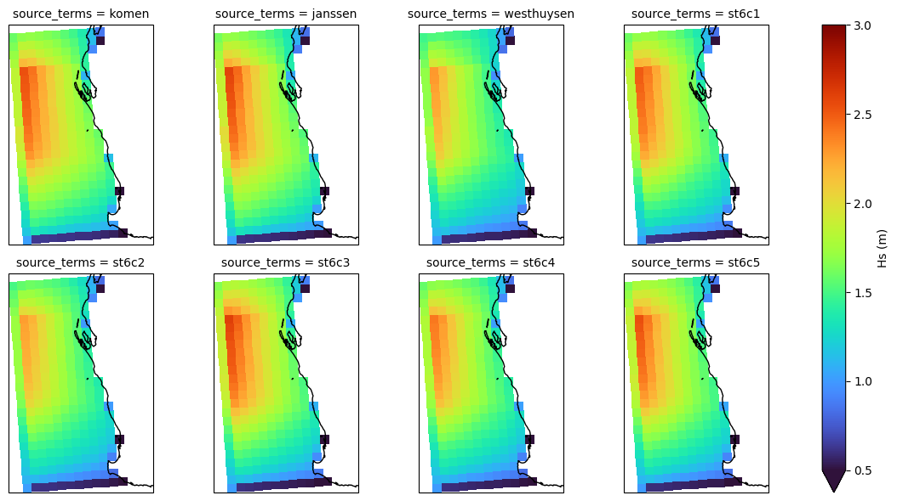
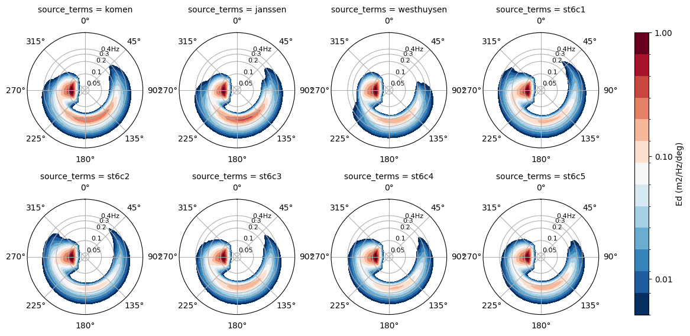

SWAN sensitivity example#
In this notebook we will load the base config options from yaml file and define different SWAN workspaces for different source terms to simulate sensitivity testing
[1]:
%load_ext autoreload
%autoreload 2
import os
from copy import deepcopy
from pathlib import Path
import yaml
import shutil
import warnings
warnings.filterwarnings('ignore')
Workspace basepath#
[2]:
workdir = Path("example_sensitivity")
shutil.rmtree(workdir, ignore_errors=True)
workdir.mkdir()
Instantiate model#
Use a fully-defined config from yaml to instantiate ModelRun with the runtime parameters and the config definition
[3]:
# Uncoment below to view the contents of the yaml file
# !cat example_sensitivity.yml
[4]:
from rompy.swan.config import SwanConfigComponents
conf_dict = yaml.load(open("example_sensitivity.yml"), Loader=yaml.Loader)
config = SwanConfigComponents(**conf_dict)
config
[4]:
SwanConfigComponents(model_type='swanconfig', template='/source/csiro/rompy/rompy/templates/swancomp', checkout='main', cgrid=REGULAR(model_type='regular', spectrum=SPECTRUM(model_type='spectrum', mdc=36, flow=0.04, fhigh=1.0, msc=None, dir1=None, dir2=None), grid=GRIDREGULAR(model_type='gridregular', xp=110.0, yp=-35.2, alp=4.0, xlen=7.5, ylen=12.5, mx=14, my=24, suffix='c')), startup=STARTUP(model_type='startup', project=PROJECT(model_type='project', name='Test sensitivity', nr='run1', title1='Source terms sensitivity testing', title2=None, title3=None), set=SET(model_type='set', level=0.0, nor=None, depmin=0.05, maxmes=None, maxerr=None, grav=None, rho=None, cdcap=None, inrhog=None, hsrerr=None, direction_convention='nautical', pwtail=None, froudmax=None, icewind=None), mode=MODE(model_type='mode', kind='nonstationary', dim='twodimensional'), coordinates=COORDINATES(model_type='coordinates', kind=SPHERICAL(model_type='spherical', projection='ccm'), reapeating=False)), inpgrid=DataInterface(model_type='data_interface', bottom=SwanDataGrid(model_type='data_grid', id='data', source=SourceIntake(model_type='intake', dataset_id='gebco', catalog_uri='../../tests/data/catalog.yaml', kwargs={}), filter=Filter(sort={}, subset={}, crop={}, timenorm={}, rename={}, derived={}), variables=['elevation'], coords=DatasetCoords(t='time', x='lon', y='lat', z='depth'), crop_data=True, buffer=1.0, z1='elevation', z2=None, var=<GridOptions.BOTTOM: 'bottom'>, fac=-1.0), input=[SwanDataGrid(model_type='data_grid', id='data', source=SourceIntake(model_type='intake', dataset_id='era5', catalog_uri='../../tests/data/catalog.yaml', kwargs={}), filter=Filter(sort={'coords': ['latitude']}, subset={}, crop={}, timenorm={}, rename={}, derived={}), variables=['u10', 'v10'], coords=DatasetCoords(t='time', x='longitude', y='latitude', z='depth'), crop_data=True, buffer=2.0, z1='u10', z2='v10', var=<GridOptions.WIND: 'wind'>, fac=1.0)]), boundary=BOUNDSPEC(model_type='boundspec', shapespec=SHAPESPEC(model_type='shapespec', shape=TMA(model_type='tma', gamma=3.3, d=12.0), per_type='peak', dspr_type='degrees'), location=SIDE(model_type='side', side='west', direction='ccw'), data=CONSTANTPAR(model_type='constantpar', hs=2.0, per=12.0, dir=255.0, dd=25.0)), initial=INITIAL(model_type='initial', kind=DEFAULT(model_type='default')), physics=PHYSICS(model_type='physics', gen=GEN3(model_type='gen3', source_terms=KOMEN(model_type='komen', wind_drag='wu', agrow=False, a=None, cds2=2.3e-05, stpm=0.00302)), sswell=None, negatinp=None, wcapping=None, quadrupl=None, breaking=None, friction=FRICTION_JONSWAP(model_type='jonswap', cfjon=0.038), triad=None, vegetation=None, mud=None, sice=None, turbulence=None, bragg=None, limiter=None, obstacle=None, setup=None, diffraction=None, surfbeat=None, scat=None, deactivate=None), prop=PROP(model_type='prop', scheme=BSBT(model_type='bsbt')), numeric=NUMERIC(model_type='numeric', stop=STOPC(model_type='stopc', dabs=0.02, drel=0.02, curvat=0.02, npnts=98.0, mode=STAT(model_type='stat', mxitst=3, alfa=None), limiter=None), dirimpl=None, sigimpl=None, ctheta=None, csigma=None, setup=None), output=OUTPUT(model_type='output', frame=None, group=None, curve=None, ray=None, isoline=None, points=POINTS(model_type='points', sname='pts', xp=[114.0, 112.5, 115.0], yp=[-34.0, -26.0, -30.0]), ngrid=None, quantity=QUANTITIES(model_type='quantities', quantities=[QUANTITY(model_type='quantity', output=[<BlockOptions.DEPTH: 'depth'>, <BlockOptions.HSIGN: 'hsign'>, <BlockOptions.TPS: 'tps'>, <BlockOptions.DIR: 'dir'>, <BlockOptions.TM01: 'tm01'>], short=None, long=None, lexp=None, hexp=None, excv=-9.0, power=None, ref=None, fswell=None, noswll=None, fmin=None, fmax=None, coord=None), QUANTITY(model_type='quantity', output=[<BlockOptions.HSWELL: 'hswell'>], short=None, long=None, lexp=None, hexp=None, excv=None, power=None, ref=None, fswell=0.125, noswll=None, fmin=None, fmax=None, coord=None)]), output_options=None, block=BLOCK(model_type='block', sname='COMPGRID', fname='swangrid.nc', times=TimeRangeOpen(model_type='open', tbeg=datetime.datetime(1970, 1, 1, 0, 0), delt=datetime.timedelta(seconds=3600), tfmt=1, dfmt='hr', suffix='blk'), header=None, idla=None, output=[<BlockOptions.DEPTH: 'depth'>, <BlockOptions.WIND: 'wind'>, <BlockOptions.HSIGN: 'hsign'>, <BlockOptions.TPS: 'tps'>, <BlockOptions.DIR: 'dir'>], unit=None), table=TABLE(model_type='table', sname='pts', fname='swantable.txt', times=TimeRangeOpen(model_type='open', tbeg=datetime.datetime(1970, 1, 1, 0, 0), delt=datetime.timedelta(seconds=3600), tfmt=1, dfmt='hr', suffix='tbl'), format='header', output=[<BlockOptions.TIME: 'time'>, <BlockOptions.HSIGN: 'hsign'>, <BlockOptions.HSWELL: 'hswell'>, <BlockOptions.DIR: 'dir'>, <BlockOptions.TPS: 'tps'>, <BlockOptions.TM01: 'tm01'>]), specout=SPECOUT(model_type='specout', sname='pts', fname='swanspec.nc', times=TimeRangeOpen(model_type='open', tbeg=datetime.datetime(1970, 1, 1, 0, 0), delt=datetime.timedelta(seconds=3600), tfmt=1, dfmt='hr', suffix='spc'), dim=SPEC2D(model_type='spec2d'), freq=ABS(model_type='abs')), nestout=None, test=None), lockup=LOCKUP(model_type='lockup', compute=COMPUTE_STAT(model_type='stat', times=NONSTATIONARY(model_type='nonstationary', tbeg=datetime.datetime(1970, 1, 1, 0, 0), delt=datetime.timedelta(seconds=3600), tfmt=1, dfmt='sec', suffix='', tend=datetime.datetime(1970, 1, 2, 0, 0)), hotfile=HOTFILE(model_type='hotfile', fname=PosixPath('hotfile.txt'), format='free'), hottimes=[1, -1], suffix='_%Y%m%dT%H%M%S')))
Examine components#
[5]:
# Project
print(config.startup.project.render())
PROJECT name='Test sensitivity' nr='run1' title1='Source terms sensitivity testing'
[6]:
# Source terms
print(config.physics.gen.render())
GEN3 KOMEN cds2=2.3e-05 stpm=0.00302 DRAG WU
Sensitivity config#
[7]:
def set_experiment(config, source_terms):
"""Return a new config object for a given experiment"""
new_config = deepcopy(config)
new_config.startup.project.title2 = f"Experiment {source_terms.model_type.upper()}"
new_config.physics.gen.source_terms = source_terms
return new_config
[8]:
from rompy.core.time import TimeRange
period = TimeRange(
start="2023-01-01T00:00:00",
end="2023-01-02T00:00:00",
interval="1h"
)
period
[8]:
TimeRange(start=datetime.datetime(2023, 1, 1, 0, 0), end=datetime.datetime(2023, 1, 2, 0, 0), duration=datetime.timedelta(days=1), interval=datetime.timedelta(seconds=3600), include_end=True)
[9]:
from rompy.model import ModelRun
from rompy.swan.subcomponents.physics import KOMEN, JANSSEN, WESTHUYSEN, ST6C1, ST6C2, ST6C3, ST6C4, ST6C5
runs = []
for component in [KOMEN, JANSSEN, WESTHUYSEN, ST6C1, ST6C2, ST6C3, ST6C4, ST6C5]:
source_terms = component()
run_id = f"{source_terms.model_type.lower()}"
new_config = set_experiment(config, source_terms=source_terms)
print(f"\n{new_config.startup.project.render()}")
print(f"{new_config.physics.gen.source_terms.render()}")
runs.append(ModelRun(
run_id=run_id,
config=new_config,
period=period,
output_dir=str(workdir)),
)
PROJECT name='Test sensitivity' nr='run1' title1='Source terms sensitivity testing' title2='Experiment KOMEN'
KOMEN DRAG WU
PROJECT name='Test sensitivity' nr='run1' title1='Source terms sensitivity testing' title2='Experiment JANSSEN'
JANSSEN DRAG WU
PROJECT name='Test sensitivity' nr='run1' title1='Source terms sensitivity testing' title2='Experiment WESTHUYSEN'
WESTHUYSEN DRAG WU
PROJECT name='Test sensitivity' nr='run1' title1='Source terms sensitivity testing' title2='Experiment ST6C1'
ST6 a1sds=4.7e-07 a2sds=6.6e-06 p1sds=4.0 p2sds=4.0 UP HWANG VECTAU U10PROXY windscaling=28.0 AGROW
PROJECT name='Test sensitivity' nr='run1' title1='Source terms sensitivity testing' title2='Experiment ST6C2'
ST6 a1sds=4.7e-07 a2sds=6.6e-06 p1sds=4.0 p2sds=4.0 UP FAN VECTAU U10PROXY windscaling=28.0 AGROW
PROJECT name='Test sensitivity' nr='run1' title1='Source terms sensitivity testing' title2='Experiment ST6C3'
ST6 a1sds=2.8e-06 a2sds=3.5e-05 p1sds=4.0 p2sds=4.0 UP HWANG VECTAU U10PROXY windscaling=32.0 AGROW
PROJECT name='Test sensitivity' nr='run1' title1='Source terms sensitivity testing' title2='Experiment ST6C4'
ST6 a1sds=2.8e-06 a2sds=3.5e-05 p1sds=4.0 p2sds=4.0 UP HWANG VECTAU U10PROXY windscaling=32.0 DEBIAS cdfac=0.89 AGROW
PROJECT name='Test sensitivity' nr='run1' title1='Source terms sensitivity testing' title2='Experiment ST6C5'
ST6 a1sds=6.5e-06 a2sds=8.5e-05 p1sds=4.0 p2sds=4.0 UP HWANG VECTAU U10PROXY windscaling=35.0 DEBIAS cdfac=0.89 AGROW
Generate workspaces#
[10]:
for run in runs:
run()
INFO:rompy.model:
INFO:rompy.model:-----------------------------------------------------
INFO:rompy.model:Model settings:
INFO:rompy.model:
run_id: komen
period:
Start: 2023-01-01 00:00:00
End: 2023-01-02 00:00:00
Duration: 1 day, 0:00:00
Interval: 1:00:00
Include End: True
output_dir: example_sensitivity
config: <class 'rompy.swan.config.SwanConfigComponents'>
INFO:rompy.model:-----------------------------------------------------
INFO:rompy.model:Generating model input files in example_sensitivity
INFO:rompy.swan.data: Writing bottom to example_sensitivity/komen/bottom.grd
INFO:rompy.swan.data: Writing wind to example_sensitivity/komen/wind.grd
INFO:rompy.model:
INFO:rompy.model:Successfully generated project in example_sensitivity
INFO:rompy.model:-----------------------------------------------------
INFO:rompy.model:
INFO:rompy.model:-----------------------------------------------------
INFO:rompy.model:Model settings:
INFO:rompy.model:
run_id: janssen
period:
Start: 2023-01-01 00:00:00
End: 2023-01-02 00:00:00
Duration: 1 day, 0:00:00
Interval: 1:00:00
Include End: True
output_dir: example_sensitivity
config: <class 'rompy.swan.config.SwanConfigComponents'>
INFO:rompy.model:-----------------------------------------------------
INFO:rompy.model:Generating model input files in example_sensitivity
INFO:rompy.swan.data: Writing bottom to example_sensitivity/janssen/bottom.grd
INFO:rompy.swan.data: Writing wind to example_sensitivity/janssen/wind.grd
INFO:rompy.model:
INFO:rompy.model:Successfully generated project in example_sensitivity
INFO:rompy.model:-----------------------------------------------------
INFO:rompy.model:
INFO:rompy.model:-----------------------------------------------------
INFO:rompy.model:Model settings:
INFO:rompy.model:
run_id: westhuysen
period:
Start: 2023-01-01 00:00:00
End: 2023-01-02 00:00:00
Duration: 1 day, 0:00:00
Interval: 1:00:00
Include End: True
output_dir: example_sensitivity
config: <class 'rompy.swan.config.SwanConfigComponents'>
INFO:rompy.model:-----------------------------------------------------
INFO:rompy.model:Generating model input files in example_sensitivity
INFO:rompy.swan.data: Writing bottom to example_sensitivity/westhuysen/bottom.grd
INFO:rompy.swan.data: Writing wind to example_sensitivity/westhuysen/wind.grd
INFO:rompy.model:
INFO:rompy.model:Successfully generated project in example_sensitivity
INFO:rompy.model:-----------------------------------------------------
INFO:rompy.model:
INFO:rompy.model:-----------------------------------------------------
INFO:rompy.model:Model settings:
INFO:rompy.model:
run_id: st6c1
period:
Start: 2023-01-01 00:00:00
End: 2023-01-02 00:00:00
Duration: 1 day, 0:00:00
Interval: 1:00:00
Include End: True
output_dir: example_sensitivity
config: <class 'rompy.swan.config.SwanConfigComponents'>
INFO:rompy.model:-----------------------------------------------------
INFO:rompy.model:Generating model input files in example_sensitivity
INFO:rompy.swan.data: Writing bottom to example_sensitivity/st6c1/bottom.grd
INFO:rompy.swan.data: Writing wind to example_sensitivity/st6c1/wind.grd
INFO:rompy.model:
INFO:rompy.model:Successfully generated project in example_sensitivity
INFO:rompy.model:-----------------------------------------------------
INFO:rompy.model:
INFO:rompy.model:-----------------------------------------------------
INFO:rompy.model:Model settings:
INFO:rompy.model:
run_id: st6c2
period:
Start: 2023-01-01 00:00:00
End: 2023-01-02 00:00:00
Duration: 1 day, 0:00:00
Interval: 1:00:00
Include End: True
output_dir: example_sensitivity
config: <class 'rompy.swan.config.SwanConfigComponents'>
INFO:rompy.model:-----------------------------------------------------
INFO:rompy.model:Generating model input files in example_sensitivity
INFO:rompy.swan.data: Writing bottom to example_sensitivity/st6c2/bottom.grd
INFO:rompy.swan.data: Writing wind to example_sensitivity/st6c2/wind.grd
INFO:rompy.model:
INFO:rompy.model:Successfully generated project in example_sensitivity
INFO:rompy.model:-----------------------------------------------------
INFO:rompy.model:
INFO:rompy.model:-----------------------------------------------------
INFO:rompy.model:Model settings:
INFO:rompy.model:
run_id: st6c3
period:
Start: 2023-01-01 00:00:00
End: 2023-01-02 00:00:00
Duration: 1 day, 0:00:00
Interval: 1:00:00
Include End: True
output_dir: example_sensitivity
config: <class 'rompy.swan.config.SwanConfigComponents'>
INFO:rompy.model:-----------------------------------------------------
INFO:rompy.model:Generating model input files in example_sensitivity
INFO:rompy.swan.data: Writing bottom to example_sensitivity/st6c3/bottom.grd
INFO:rompy.swan.data: Writing wind to example_sensitivity/st6c3/wind.grd
INFO:rompy.model:
INFO:rompy.model:Successfully generated project in example_sensitivity
INFO:rompy.model:-----------------------------------------------------
INFO:rompy.model:
INFO:rompy.model:-----------------------------------------------------
INFO:rompy.model:Model settings:
INFO:rompy.model:
run_id: st6c4
period:
Start: 2023-01-01 00:00:00
End: 2023-01-02 00:00:00
Duration: 1 day, 0:00:00
Interval: 1:00:00
Include End: True
output_dir: example_sensitivity
config: <class 'rompy.swan.config.SwanConfigComponents'>
INFO:rompy.model:-----------------------------------------------------
INFO:rompy.model:Generating model input files in example_sensitivity
INFO:rompy.swan.data: Writing bottom to example_sensitivity/st6c4/bottom.grd
INFO:rompy.swan.data: Writing wind to example_sensitivity/st6c4/wind.grd
INFO:rompy.model:
INFO:rompy.model:Successfully generated project in example_sensitivity
INFO:rompy.model:-----------------------------------------------------
INFO:rompy.model:
INFO:rompy.model:-----------------------------------------------------
INFO:rompy.model:Model settings:
INFO:rompy.model:
run_id: st6c5
period:
Start: 2023-01-01 00:00:00
End: 2023-01-02 00:00:00
Duration: 1 day, 0:00:00
Interval: 1:00:00
Include End: True
output_dir: example_sensitivity
config: <class 'rompy.swan.config.SwanConfigComponents'>
INFO:rompy.model:-----------------------------------------------------
INFO:rompy.model:Generating model input files in example_sensitivity
INFO:rompy.swan.data: Writing bottom to example_sensitivity/st6c5/bottom.grd
INFO:rompy.swan.data: Writing wind to example_sensitivity/st6c5/wind.grd
INFO:rompy.model:
INFO:rompy.model:Successfully generated project in example_sensitivity
INFO:rompy.model:-----------------------------------------------------
Check the workspace#
[11]:
modeldirs = sorted(workdir.glob("*"))
modeldirs
[11]:
[PosixPath('example_sensitivity/janssen'),
PosixPath('example_sensitivity/komen'),
PosixPath('example_sensitivity/st6c1'),
PosixPath('example_sensitivity/st6c2'),
PosixPath('example_sensitivity/st6c3'),
PosixPath('example_sensitivity/st6c4'),
PosixPath('example_sensitivity/st6c5'),
PosixPath('example_sensitivity/westhuysen')]
[12]:
sorted(modeldirs[0].glob("*"))
[12]:
[PosixPath('example_sensitivity/janssen/INPUT'),
PosixPath('example_sensitivity/janssen/bottom.grd'),
PosixPath('example_sensitivity/janssen/wind.grd')]
[13]:
input = modeldirs[0] / "INPUT"
print(input.read_text())
! Rompy SwanConfig
! Template: /source/csiro/rompy/rompy/templates/swancomp
! Generated: 2023-11-09 19:10:43.112490 on rafael-XPS by rguedes
! Startup -------------------------------------------------------------------------------------------------------------------------------------------------------------------------
PROJECT name='Test sensitivity' nr='run1' title1='Source terms sensitivity testing' title2='Experiment JANSSEN'
SET level=0.0 depmin=0.05 NAUTICAL
MODE NONSTATIONARY TWODIMENSIONAL
COORDINATES SPHERICAL CCM
! Computational Grid --------------------------------------------------------------------------------------------------------------------------------------------------------------
CGRID REGULAR xpc=110.0 ypc=-35.2 alpc=4.0 xlenc=7.5 ylenc=12.5 mxc=14 myc=24 CIRCLE mdc=36 flow=0.04 fhigh=1.0
! Input Grids ---------------------------------------------------------------------------------------------------------------------------------------------------------------------
INPGRID BOTTOM REG 109.0 -36.0 0.0 9 14 1.0 1.0 EXC -99.0
READINP BOTTOM -1.0 'bottom.grd' 3 FREE
INPGRID WIND REG 110.0 -35.0 0.0 1 2 5.0 5.0 EXC -99.0 NONSTATION 20230101.000000 6.0 HR
READINP WIND 1.0 'wind.grd' 3 0 1 0 FREE
! Boundary and Initial conditions -------------------------------------------------------------------------------------------------------------------------------------------------
BOUND SHAPESPEC TMA gamma=3.3 d=12.0 PEAK DSPR DEGREES
BOUNDSPEC SIDE WEST CCW CONSTANT PAR hs=2.0 per=12.0 dir=255.0 dd=25.0
INITIAL DEFAULT
! Physics -------------------------------------------------------------------------------------------------------------------------------------------------------------------------
GEN3 JANSSEN DRAG WU
FRICTION JONSWAP CONSTANT cfjon=0.038
! Numerics ------------------------------------------------------------------------------------------------------------------------------------------------------------------------
PROP BSBT
NUMERIC STOPC dabs=0.02 drel=0.02 curvat=0.02 npnts=98.0 STATIONARY mxitst=3
! Output --------------------------------------------------------------------------------------------------------------------------------------------------------------------------
POINTS sname='pts' &
xp=114.0 yp=-34.0 &
xp=112.5 yp=-26.0 &
xp=115.0 yp=-30.0
QUANTITY DEPTH HSIGN TPS DIR TM01 excv=-9.0
QUANTITY HSWELL fswell=0.125
BLOCK sname='COMPGRID' fname='swangrid.nc' &
DEPTH &
WIND &
HSIGN &
TPS &
DIR &
OUTPUT tbegblk=20230101.000000 deltblk=1.0 HR
TABLE sname='pts' HEADER fname='swantable.txt' &
TIME &
HSIGN &
HSWELL &
DIR &
TPS &
TM01 &
OUTPUT tbegtbl=20230101.000000 delttbl=1.0 HR
SPECOUT sname='pts' SPEC2D ABS fname='swanspec.nc' OUTPUT tbegspc=20230101.000000 deltspc=1.0 HR
! Lockup --------------------------------------------------------------------------------------------------------------------------------------------------------------------------
COMPUTE STATIONARY time=20230101.000000
COMPUTE STATIONARY time=20230101.010000
HOTFILE fname='hotfile_20230101T010000.txt' FREE
COMPUTE STATIONARY time=20230101.020000
COMPUTE STATIONARY time=20230101.030000
COMPUTE STATIONARY time=20230101.040000
COMPUTE STATIONARY time=20230101.050000
COMPUTE STATIONARY time=20230101.060000
COMPUTE STATIONARY time=20230101.070000
COMPUTE STATIONARY time=20230101.080000
COMPUTE STATIONARY time=20230101.090000
COMPUTE STATIONARY time=20230101.100000
COMPUTE STATIONARY time=20230101.110000
COMPUTE STATIONARY time=20230101.120000
COMPUTE STATIONARY time=20230101.130000
COMPUTE STATIONARY time=20230101.140000
COMPUTE STATIONARY time=20230101.150000
COMPUTE STATIONARY time=20230101.160000
COMPUTE STATIONARY time=20230101.170000
COMPUTE STATIONARY time=20230101.180000
COMPUTE STATIONARY time=20230101.190000
COMPUTE STATIONARY time=20230101.200000
COMPUTE STATIONARY time=20230101.210000
COMPUTE STATIONARY time=20230101.220000
COMPUTE STATIONARY time=20230101.230000
COMPUTE STATIONARY time=20230102.000000
HOTFILE fname='hotfile_20230102T000000.txt' FREE
STOP
Run the model#
[14]:
for modeldir in modeldirs:
cmd = ["docker", "run", "-v", f"./{modeldir}:/home", "oceanum/swan:4141", "swan.exe", ">", f"{modeldir}/swan.log"]
print(" ".join(cmd))
os.system(" ".join(cmd))
docker run -v ./example_sensitivity/janssen:/home oceanum/swan:4141 swan.exe > example_sensitivity/janssen/swan.log
docker run -v ./example_sensitivity/komen:/home oceanum/swan:4141 swan.exe > example_sensitivity/komen/swan.log
docker run -v ./example_sensitivity/st6c1:/home oceanum/swan:4141 swan.exe > example_sensitivity/st6c1/swan.log
docker run -v ./example_sensitivity/st6c2:/home oceanum/swan:4141 swan.exe > example_sensitivity/st6c2/swan.log
docker run -v ./example_sensitivity/st6c3:/home oceanum/swan:4141 swan.exe > example_sensitivity/st6c3/swan.log
docker run -v ./example_sensitivity/st6c4:/home oceanum/swan:4141 swan.exe > example_sensitivity/st6c4/swan.log
docker run -v ./example_sensitivity/st6c5:/home oceanum/swan:4141 swan.exe > example_sensitivity/st6c5/swan.log
docker run -v ./example_sensitivity/westhuysen:/home oceanum/swan:4141 swan.exe > example_sensitivity/westhuysen/swan.log
[15]:
# Check for output files
for modeldir in modeldirs:
print(sorted(modeldir.glob("*.nc")))
[PosixPath('example_sensitivity/janssen/swangrid.nc'), PosixPath('example_sensitivity/janssen/swanspec.nc')]
[PosixPath('example_sensitivity/komen/swangrid.nc'), PosixPath('example_sensitivity/komen/swanspec.nc')]
[PosixPath('example_sensitivity/st6c1/swangrid.nc'), PosixPath('example_sensitivity/st6c1/swanspec.nc')]
[PosixPath('example_sensitivity/st6c2/swangrid.nc'), PosixPath('example_sensitivity/st6c2/swanspec.nc')]
[PosixPath('example_sensitivity/st6c3/swangrid.nc'), PosixPath('example_sensitivity/st6c3/swanspec.nc')]
[PosixPath('example_sensitivity/st6c4/swangrid.nc'), PosixPath('example_sensitivity/st6c4/swanspec.nc')]
[PosixPath('example_sensitivity/st6c5/swangrid.nc'), PosixPath('example_sensitivity/st6c5/swanspec.nc')]
[PosixPath('example_sensitivity/westhuysen/swangrid.nc'), PosixPath('example_sensitivity/westhuysen/swanspec.nc')]
Plot outputs#
[16]:
import os
import numpy as np
import pandas as pd
import xarray as xr
import matplotlib.pyplot as plt
import cartopy.crs as ccrs
from wavespectra import read_ncswan, read_swan
from wavespectra.core.swan import read_tab
pd.set_option("display.notebook_repr_html", False)
[17]:
def read_gridded_output(run):
"""Read mean gridded output from a model run"""
modeldir = Path(run.output_dir) / run.run_id
dset = xr.open_dataset(modeldir / run.config.output.block.fname)
return dset.mean("time")
def read_spectra_output(run):
"""Read mean spectra output from a model run"""
modeldir = Path(run.output_dir) / run.run_id
dset = read_ncswan(modeldir / run.config.output.specout.fname)
return dset.mean("time")
[18]:
# Gridded parameters
dsgrid = xr.concat([read_gridded_output(run) for run in runs], dim="source_terms")
dsgrid["source_terms"] = [run.run_id for run in runs]
dsgrid
[18]:
<xarray.Dataset>
Dimensions: (yc: 25, xc: 15, source_terms: 8)
Coordinates:
longitude (yc, xc) float32 110.0 110.5 111.1 111.6 ... 115.5 116.1 116.6
latitude (yc, xc) float32 -35.2 -35.16 -35.13 ... -22.28 -22.24 -22.21
* source_terms (source_terms) <U10 'komen' 'janssen' ... 'st6c4' 'st6c5'
Dimensions without coordinates: yc, xc
Data variables:
depth (source_terms, yc, xc) float32 4.824e+03 4.16e+03 ... nan nan
xwnd (source_terms, yc, xc) float32 -0.8986 -1.029 ... nan nan
ywnd (source_terms, yc, xc) float32 6.718 6.65 6.582 ... nan nan
hs (source_terms, yc, xc) float32 1.019 0.6307 0.6288 ... nan nan
tps (source_terms, yc, xc) float32 11.66 11.66 11.66 ... nan nan
theta0 (source_terms, yc, xc) float32 255.5 291.2 291.5 ... nan nan[19]:
# Wave spectra
dspec = xr.concat([read_spectra_output(run) for run in runs], dim="source_terms")
dspec["source_terms"] = [run.run_id for run in runs]
dspec
[19]:
<xarray.Dataset>
Dimensions: (source_terms: 8, site: 3, freq: 35, dir: 36)
Coordinates:
* freq (freq) float32 0.04 0.04397 0.04834 ... 0.8275 0.9097 1.0
* dir (dir) float32 261.0 251.0 241.0 231.0 ... 291.0 281.0 271.0
* site (site) int64 1 2 3
* source_terms (source_terms) <U10 'komen' 'janssen' ... 'st6c4' 'st6c5'
Data variables:
lon (source_terms, site) float32 dask.array<chunksize=(1, 3), meta=np.ndarray>
lat (source_terms, site) float32 dask.array<chunksize=(1, 3), meta=np.ndarray>
efth (source_terms, site, freq, dir) float32 dask.array<chunksize=(1, 3, 35, 36), meta=np.ndarray>
dpt (source_terms, site) float32 dask.array<chunksize=(1, 3), meta=np.ndarray>
wspd (source_terms, site) float32 dask.array<chunksize=(1, 3), meta=np.ndarray>
wdir (source_terms, site) float32 dask.array<chunksize=(1, 3), meta=np.ndarray>Gridded parameters#
[20]:
f = dsgrid.hs.plot(
x="longitude",
y="latitude",
col="source_terms",
col_wrap=4,
vmin=0.5,
vmax=3.0,
cmap="turbo",
subplot_kws=dict(projection=ccrs.PlateCarree()),
cbar_kwargs=dict(label="Hs (m)"),
)
f.map(lambda: plt.gca().coastlines());

Wave spectra#
[21]:
p = dspec.isel(site=0).spec.plot(col="source_terms", col_wrap=4, cbar_kwargs={"label": "Ed (m2/Hz/deg)"})
